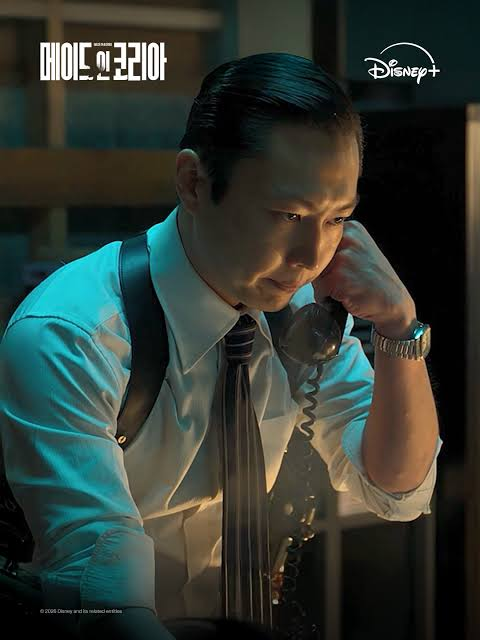

이렇게 좋은 연기하는 배우 둘 비중은 점점줄고
하나는 심지어 죽여버림
얘네 비중은 점점 늘어남 ㅋㅋ
진짜 작가 대가리 망치로 내려치고싶음

이렇게 좋은 연기하는 배우 둘 비중은 점점줄고
하나는 심지어 죽여버림
얘네 비중은 점점 늘어남 ㅋㅋ
진짜 작가 대가리 망치로 내려치고싶음
동생새끼는 살아 움직이는 암덩어리 그 자체던데 ㅋㅋ
동생 그래도 현실에 있을법한 인간이긴해 모든 사람이 염치를 아는것도 아니고 지도 나름 잘났는데 더 잘난 형한테 자격지심이랑 열등감이 있다고 생각하면 뭐
정우성 이젠 싫더라
동생은 캐릭터가 병신인거지 연기 이슈는 없는거 아니야?
노재원식 표학수 캐릭터 해석 너무 별론데.. 그리고 연기쪼가 심해서 슬슬 지겨움
연극 느낌이긴한데 그래도 좋던데
너 김원훈이지
국어책 읽기 연기ㄷㄷ
정우성 소리지르는 연기 원툴이더라 ㅋㅋㅋㅋㅋ 진짜 현빈,표과장 연기 개잘함 ㅋㅋㅋㅋㅋ
잘생겼잖아, 원래 드라마는 얼빠들 타겟으로 하는거임
악당을 응원하는 맛이 생겨버림 ㅋㅋㅋ
ㅈ우성
정우성 또나와? 1화에 안나오길래 좋아했는데
주조연이 잘 받쳐줘야하는데...
시즌1은 실제사건이랑 엮어서 잘 만들었던데